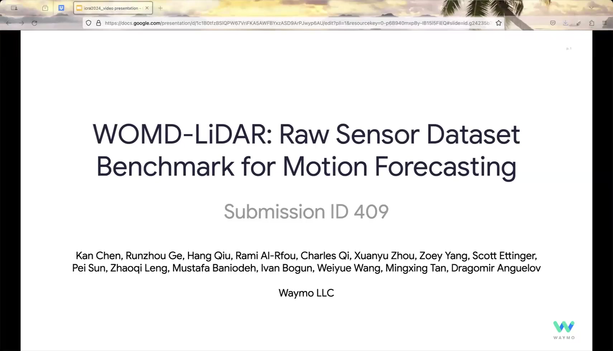
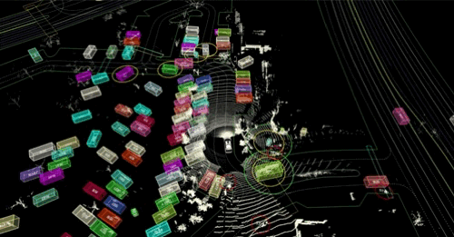
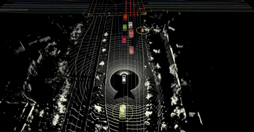
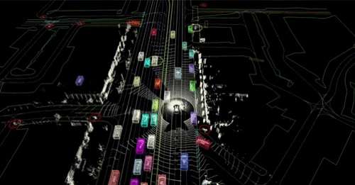
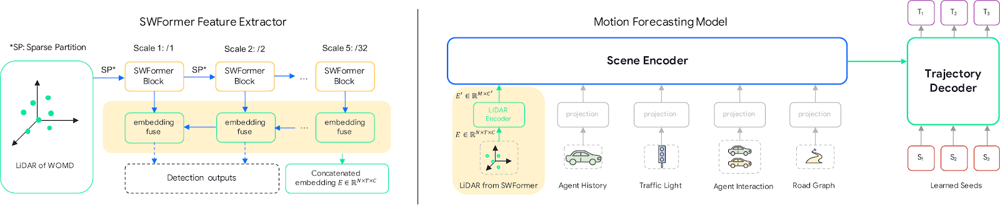
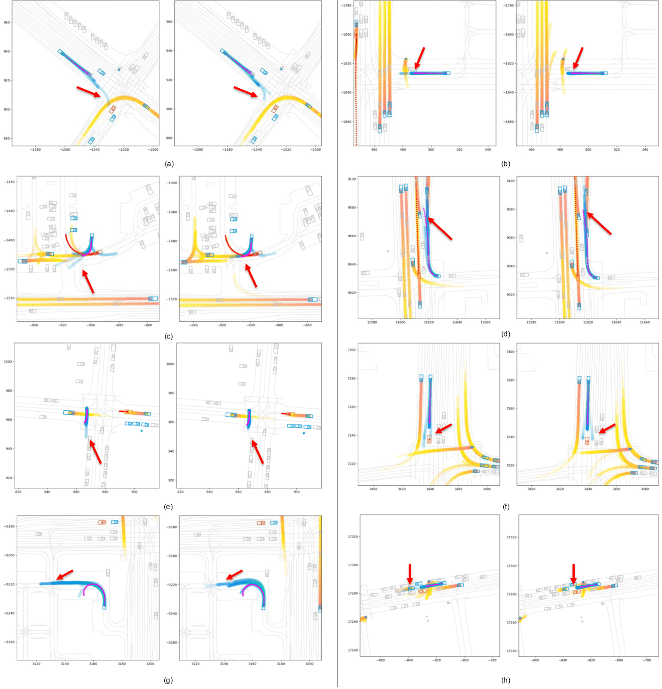

Kan Chen、Runzhou Ge、Hang Qiu、Rami Al-Rfou、Charles R. Qi、Xuanyu Zhou、Zoey Yang、Scott Ettinger、Pei Sun、Zhaoqi Leng、Mustafa Baniodeh、Ivan Bogun、Weiyue Wang、Mingxing Tan、Dragomir Anguelov（Waymo Research）
発表： ICRA 2024（国際ロボット工学・自動化会議）｜arXiv： arxiv.org/abs/2304.03834
広く採用されているモーション予測データセットの多くは、観測されたセンサー入力を3Dボックスやポリラインなどの高次元の抽象表現に置き換えています。これらの疎な形状表現は、認識システムの予測によって元のシーンにアノテーションを付けることで得られるものです。このような設計の選択は、次の2つの制約をもたらします。第一に、認識システムが生成したノイズや誤りが後続のモーション予測モデルに波及するという問題。第二に、意味論的な情報が失われることによる、エンドツーエンド学習の発展の妨げという問題です。
本研究では、これらのモジュラーアプローチの影響を研究し、その制約を軽減する新しいパラダイムを設計し、エンドツーエンドのモーション予測モデルの開発を加速することを目的として、Waymo Open Motion Datasetを大規模かつ高品質・多様なLiDARデータで拡充した新しいデータセット「WOMD-LiDAR」を提案します。WOMD-LiDARは、都市部および郊外の様々な場所で収集された、100,000件超の20秒間シーンにまたがる同期・較正済みのLiDARポイントクラウドを含んでいます。このデータセットは元のWaymo Open Datasetと比較して100倍のシーン数を誇ります。ベースラインモデルの提供を通じ、「LiDARデータがモーション予測タスクの改善をもたらす」ことを実証しています。

WOMD-LiDARデータセットはWaymo Open Motion Dataset（バージョン1.2.0）の一部として公開されており、waymo.com/open/data/motion/からアクセスできます。9秒間の観測ウィンドウの最初の1秒間分のLiDARカバレッジを提供しています。



WOMD-LiDARデータセットに基づくベースラインモデルを提供しています。モデルのアーキテクチャ概要を以下に示します。

